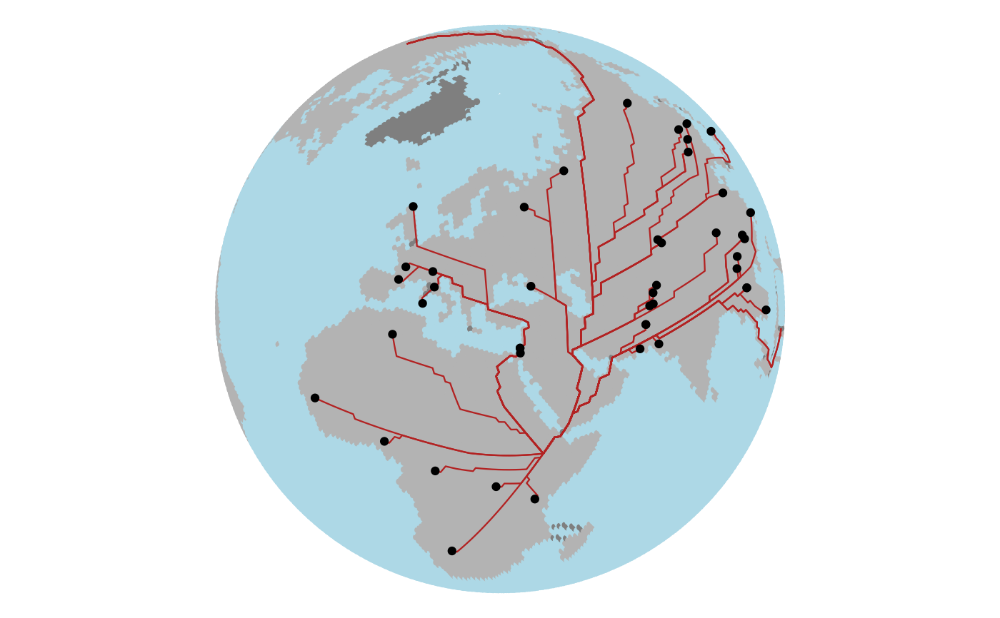

Adds a gPath (from dijkstraBetween() or dijkstraFrom()) to a ggplot
as ggplot2::geom_sf() linestrings.
Usage
geom_gpath(
data = NULL,
mapping = ggplot2::aes(),
stat = "sf",
position = "identity",
na.rm = FALSE,
show.legend = NA,
...
)Arguments
- data
a
gPathobject.- mapping
aesthetics.
- stat, position, na.rm, show.legend, ...
forwarded to
ggplot2::geom_sf().
See also
Other ggplot_methods:
autoplot.gData(),
autoplot.gGraph(),
geom_gdata(),
geom_ggraph()
Examples
library(ggplot2)
addis <- list(lon = 38.74, lat = 9.03)
addis_node <- closestNode(worldgraph.40k, addis)
myPath <- dijkstraFrom(hgdp, addis_node)
ggplot() +
geom_ggraph(data = worldgraph.40k, aes(color = habitat),
edges = FALSE, size = 1, show.legend = FALSE) +
scale_color_manual(values = c(land = "grey70", sea = "lightblue", coast = "grey70")) +
geom_gpath(data = myPath, color = "firebrick", linewidth = 0.4) +
geom_gdata(data = hgdp, color = "black", size = 1.5) +
coord_sf(crs = "+proj=ortho +lat_0=40 +lon_0=30") +
theme_void()
